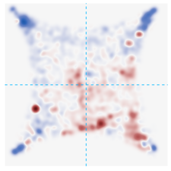
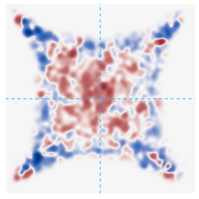
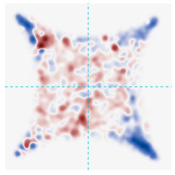
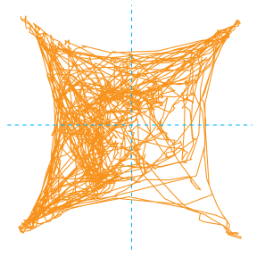
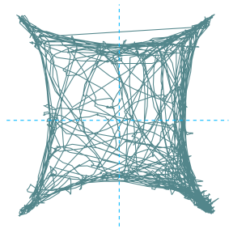
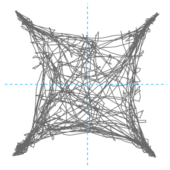
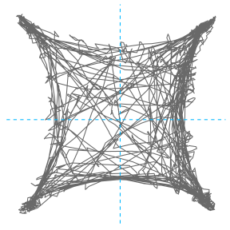

Behavioral analysis: Genes (4quad)
James Howe
08 January, 2024
Last updated: 2024-01-08
Checks: 6 1
Knit directory:
CorticalAmygdala_pipelines/
This reproducible R Markdown analysis was created with workflowr (version 1.7.1). The Checks tab describes the reproducibility checks that were applied when the results were created. The Past versions tab lists the development history.
The R Markdown is untracked by Git. To know which version of the R
Markdown file created these results, you’ll want to first commit it to
the Git repo. If you’re still working on the analysis, you can ignore
this warning. When you’re finished, you can run
wflow_publish to commit the R Markdown file and build the
HTML.
Great job! The global environment was empty. Objects defined in the global environment can affect the analysis in your R Markdown file in unknown ways. For reproduciblity it’s best to always run the code in an empty environment.
The command set.seed(20220906) was run prior to running
the code in the R Markdown file. Setting a seed ensures that any results
that rely on randomness, e.g. subsampling or permutations, are
reproducible.
Great job! Recording the operating system, R version, and package versions is critical for reproducibility.
Nice! There were no cached chunks for this analysis, so you can be confident that you successfully produced the results during this run.
Great job! Using relative paths to the files within your workflowr project makes it easier to run your code on other machines.
Great! You are using Git for version control. Tracking code development and connecting the code version to the results is critical for reproducibility.
The results in this page were generated with repository version 47f3cfa. See the Past versions tab to see a history of the changes made to the R Markdown and HTML files.
Note that you need to be careful to ensure that all relevant files for
the analysis have been committed to Git prior to generating the results
(you can use wflow_publish or
wflow_git_commit). workflowr only checks the R Markdown
file, but you know if there are other scripts or data files that it
depends on. Below is the status of the Git repository when the results
were generated:
Ignored files:
Ignored: .DS_Store
Ignored: .RData
Ignored: .Rhistory
Ignored: .Rproj.user/
Ignored: analysis/.DS_Store
Ignored: data/behavior/
Ignored: data/projections/
Ignored: data/rnascope/
Ignored: data/sequencing/
Ignored: renv/library/
Ignored: renv/staging/
Untracked files:
Untracked: Rplot.svg
Untracked: analysis/08A-merge_rd1_ATAC.Rmd
Untracked: analysis/behavior_01-4quad_topography.Rmd
Untracked: analysis/behavior_02-epm_topography.Rmd
Untracked: analysis/behavior_03-openfield_topography.Rmd
Untracked: analysis/behavior_03-projections.Rmd
Untracked: analysis/behavior_04-4quad_genetics.Rmd
Untracked: analysis/behavior_04-projections_silencing_tmt.Rmd
Untracked: analysis/behavior_05-projections_silencing_2PE.Rmd
Untracked: analysis/behavior_06-genes_silencing_tmt.Rmd
Untracked: analysis/behavior_07-genes_silencing_2PE.Rmd
Untracked: analysis/behavior_09-epm_topography.Rmd
Untracked: analysis/behavior_10-epm_projections.Rmd
Untracked: analysis/behavior_12-openfield_projections.Rmd
Untracked: analysis/behavior_13-openfield_genes_silence.Rmd
Untracked: analysis/behavior_14-openfield_projections_silence.Rmd
Untracked: analysis/behavior_15-epm_genes_silence.Rmd
Untracked: analysis/projections.Rmd
Untracked: analysis/rnascope.Rmd
Untracked: analysis/sequencing-02B-initial_classification_rd1_RNA.Rmd
Untracked: analysis/sequencing-02C-reprocess_Neuron_rd1_RNA.Rmd
Untracked: analysis/sequencing-02D-Neuron_classification_rd1_RNA.Rmd
Untracked: analysis/sequencing-02E-reprocess_Glut_rd1_RNA.Rmd
Untracked: analysis/sequencing-02F-reprocess_GABA_rd1_RNA.Rmd
Untracked: analysis/sequencing-02G-Glut_classification_rd1_RNA.Rmd
Untracked: analysis/sequencing-03A-merge_filtered_RNA.Rmd
Untracked: analysis/sequencing-03B-initial_classification_RNA.Rmd
Untracked: analysis/sequencing-04-initial_deg.Rmd
Untracked: analysis/sequencing-04A-reprocess_Neuron_RNA.Rmd
Untracked: analysis/sequencing-04B-reprocess_Nonneuron_RNA.Rmd
Untracked: analysis/sequencing-04C-Neuron_classification_RNA.Rmd
Untracked: analysis/sequencing-04D-Nonneuron_classification_RNA.Rmd
Untracked: analysis/sequencing-05C-reprocess_Astro_RNA.Rmd
Untracked: analysis/sequencing-05L-Glut_classification_RNA.Rmd
Untracked: analysis/sequencing-05M-GABA_classification_RNA.Rmd
Untracked: analysis/sequencing-05N-Astro_classification_RNA.Rmd
Untracked: analysis/sequencing-05O-Macro_classification_RNA.Rmd
Untracked: analysis/sequencing-05P-NFOL_classification_RNA.Rmd
Untracked: analysis/sequencing-05Q-MOL_classification_RNA.Rmd
Untracked: analysis/sequencing-05R-ABC_classification_RNA.Rmd
Untracked: analysis/sequencing-05S-VLMC_classification_RNA.Rmd
Untracked: analysis/sequencing-05T-Immune_classification+labeling_RNA.Rmd
Untracked: analysis/sequencing-05X-reprocess_Astro.Rmd
Untracked: analysis/sequencing-05X-reprocess_GABAergic.Rmd
Untracked: analysis/sequencing-05X-reprocess_Glutamatergic.Rmd
Untracked: analysis/sequencing-05X-reprocess_Microglia.Rmd
Untracked: analysis/sequencing-05X-reprocess_Neuron.Rmd
Untracked: analysis/sequencing-05X-reprocess_Nonneuron.Rmd
Untracked: analysis/sequencing-05X-reprocess_OLG.Rmd
Untracked: analysis/sequencing-05X-reprocess_OPC.Rmd
Untracked: analysis/sequencing-05X-reprocess_VLMC.Rmd
Untracked: analysis/sequencing-06A-merged_classification_RNA.Rmd
Untracked: analysis/sequencing-06B-annotate_GABAergic.Rmd
Untracked: analysis/sequencing-06B-merged_deg_discovery_RNA.Rmd
Untracked: analysis/sequencing-07A-preprocess_aplCoA-1_P1_ATAC.Rmd
Untracked: analysis/sequencing-07B-preprocess_aplCoA-1_P2_ATAC.Rmd
Untracked: analysis/sequencing-07C-preprocess_aplCoA-2_ATAC.Rmd
Untracked: analysis/sequencing-07D-preprocess_pplCoA-1_P1_ATAC.Rmd
Untracked: analysis/sequencing-07E-preprocess_pplCoA-1_P2_ATAC.Rmd
Untracked: analysis/sequencing-07F-preprocess_pplCoA-2_ATAC.Rmd
Untracked: behav.csv
Untracked: code/behavior-misc_processes.R
Untracked: code/behavior-plot_functions.R
Untracked: code/behavior-refs.R
Untracked: code/sequencing-color_scales.R
Untracked: code/sequencing-plot_functions.R
Untracked: code/sequencing_misc.R
Untracked: dist.csv
Untracked: output/sequencing/
Untracked: test_DLC.Rmd
Untracked: test_DLC.nb.html
Unstaged changes:
Modified: analysis/sequencing-02A-merge_rd1_RNA.Rmd
Modified: analysis/sequencing-03-initial_classification.Rmd
Modified: analysis/sequencing-05A-reprocess_Glut_RNA.Rmd
Modified: renv.lock
Modified: renv/settings.dcf
Note that any generated files, e.g. HTML, png, CSS, etc., are not included in this status report because it is ok for generated content to have uncommitted changes.
There are no past versions. Publish this analysis with
wflow_publish() to start tracking its development.
Introduction
This is a notebook that processes 4-quad data and outputs analyses and figures for publication.
# set up paths
genes_id <- params$dataset
genes_path <- params$path
source("code/behavior-refs.R")Loading required package: MASSLoading required package: tidyverse── Attaching core tidyverse packages ──────────────────────── tidyverse 2.0.0 ──
✔ dplyr 1.1.3 ✔ readr 2.1.4
✔ forcats 1.0.0 ✔ stringr 1.5.0
✔ ggplot2 3.4.3 ✔ tibble 3.2.1
✔ lubridate 1.9.3 ✔ tidyr 1.3.0
✔ purrr 1.0.2
── Conflicts ────────────────────────────────────────── tidyverse_conflicts() ──
✖ dplyr::filter() masks stats::filter()
✖ dplyr::lag() masks stats::lag()
✖ dplyr::select() masks MASS::select()
ℹ Use the conflicted package (<http://conflicted.r-lib.org/>) to force all conflicts to become errors
Loading required package: colorRamps
Loading required package: RColorBrewer
Loading required package: spatstat
Loading required package: spatstat.data
Loading required package: spatstat.geom
spatstat.geom 3.2-5
Attaching package: 'spatstat.geom'
The following object is masked from 'package:MASS':
area
Loading required package: spatstat.random
spatstat.random 3.1-6
Loading required package: spatstat.explore
Loading required package: nlme
Attaching package: 'nlme'
The following object is masked from 'package:dplyr':
collapse
spatstat.explore 3.2-3
Loading required package: spatstat.model
Loading required package: rpart
spatstat.model 3.2-6
Loading required package: spatstat.linnet
spatstat.linnet 3.1-1
spatstat 3.0-6
For an introduction to spatstat, type 'beginner'
Loading required package: viridis
Loading required package: viridisLite
Loading required package: cowplot
Attaching package: 'cowplot'
The following object is masked from 'package:lubridate':
stamp
Loading required package: grid
Attaching package: 'grid'
The following object is masked from 'package:spatstat.geom':
as.mask
Loading required package: gridExtra
Attaching package: 'gridExtra'
The following object is masked from 'package:dplyr':
combine
Loading required package: colorspace
Attaching package: 'colorspace'
The following object is masked from 'package:spatstat.geom':
coords
Loading required package: scales
Attaching package: 'scales'
The following object is masked from 'package:viridis':
viridis_pal
The following object is masked from 'package:spatstat.geom':
rescale
The following object is masked from 'package:purrr':
discard
The following object is masked from 'package:readr':
col_factor
Attaching package: 'zoo'
The following objects are masked from 'package:base':
as.Date, as.Date.numeric
Loading required package: carData
Attaching package: 'car'
The following object is masked from 'package:spatstat.model':
bc
The following object is masked from 'package:spatstat.geom':
ellipse
The following object is masked from 'package:dplyr':
recode
The following object is masked from 'package:purrr':
some
Loading required package: mvtnorm
Loading required package: survival
Loading required package: TH.data
Attaching package: 'TH.data'
The following object is masked from 'package:MASS':
geyser
Attaching package: 'rstatix'
The following object is masked from 'package:MASS':
select
The following object is masked from 'package:stats':
filter
Attaching package: 'ggpubr'
The following object is masked from 'package:cowplot':
get_legend
The following objects are masked from 'package:spatstat.geom':
border, rotatesource("code/behavior-misc_processes.R")
source("code/behavior-plot_functions.R")
genes_groups <- unlist(strsplit(Sys.glob(paste0(genes_path, "*")), genes_path))[c(FALSE, TRUE)]Load the data
Names have to be given manually in most cases. Also for now copy into console because it does not load due to odd workspace issues. This loads all files in a directory and puts it into the correct format automatically.
# set up the object with pointers
data_genes <- read_stim_data("4quad", genes_groups, genes_path, genes_labels)
data_genes <- list(data_genes$`vg1-control`, data_genes$`vg1-stim`,
data_genes$`vg2-control`, data_genes$`vg2-stim`)
names(data_genes) <- c("VGlut1-control", "VGlut1-stim", "VGlut2-control", "VGlut2-stim")Performance Index metrics
Repeated Measures
Summary statistics
baseline_array_genes <- transform_pi(data_genes, "baseline", "Quadrant", 1, 2400)
treatment_array_genes <- transform_pi(data_genes, "treatment", "Quadrant", 1, 2881)
pi_group_genes <- group_array(data_genes,
baseline_array_genes,
treatment_array_genes, "pi")VGlut2
VGlut2_group_genes <- pi_group_genes[pi_group_genes$group
%in% c("VGlut2 ChR2", "VGlut2 eYFP"),] %>%
gather(key = "time", value = "PI", baseline_pi, treatment_pi) %>%
convert_as_factor(group, time)
levels(VGlut2_group_genes$time) <- c("OFF", "ON")
VGlut2_group_genes$group <- factor(VGlut2_group_genes$group,
levels = c("VGlut2 eYFP", "VGlut2 ChR2"))
levels(VGlut2_group_genes$group) <- c("eYFP", "ChR2")
VGlut2_group_genes %>%
group_by(group, time) %>%
get_summary_stats(PI, type = "mean_se")VGlut1
VGlut1_group_genes <- pi_group_genes[pi_group_genes$group
%in% c("VGlut1 ChR2", "VGlut1 eYFP"),] %>%
gather(key = "time", value = "PI", baseline_pi, treatment_pi) %>%
convert_as_factor(group, time)
levels(VGlut1_group_genes$time) <- c("OFF", "ON")
VGlut1_group_genes$group <- factor(VGlut1_group_genes$group,
levels = c("VGlut1 eYFP", "VGlut1 ChR2"))
levels(VGlut1_group_genes$group) <- c("eYFP", "ChR2")
VGlut1_group_genes %>%
group_by(group, time) %>%
get_summary_stats(PI, type = "mean_se")Two-way repeated-measures ANOVA
VGlut2
ANOVA
display_anova(VGlut2_group_genes, "PI")Pairwise comparisons
pairwise_comp_anova(VGlut2_group_genes, "PI")VGlut1
ANOVA
display_anova(VGlut1_group_genes, "PI")Pairwise comparisons
pairwise_comp_anova(VGlut1_group_genes, "PI")Plots
VGlut2
bg_twogroup(VGlut2_group_genes, rm_pi_label, VGlut2_color, genes_pi_axes, chr2_blue)VGlut1
bg_twogroup(VGlut1_group_genes, rm_pi_label, VGlut1_color, genes_pi_axes, chr2_blue)Difference
Summary statistics
VGlut2
VGlut2_group_genes <- cbind.data.frame(VGlut2_group_genes$id[1: (length(rownames(VGlut2_group_genes))/2)],
VGlut2_group_genes$group[1: (length(rownames(VGlut2_group_genes))/2)],
VGlut2_group_genes$PI[(length(rownames(VGlut2_group_genes))/2)+1:
(length(rownames(VGlut2_group_genes))/2)] -
VGlut2_group_genes$PI[1: (length(rownames(VGlut2_group_genes))/2)])
colnames(VGlut2_group_genes) <- c("id", "group", "PI")
VGlut2_group_genes %>%
group_by(group) %>%
get_summary_stats(PI, type = "mean_se")VGlut1
VGlut1_group_genes <- cbind.data.frame(VGlut1_group_genes$id[1: (length(rownames(VGlut1_group_genes))/2)],
VGlut1_group_genes$group[1: (length(rownames(VGlut1_group_genes))/2)],
VGlut1_group_genes$PI[(length(rownames(VGlut1_group_genes))/2)+1:
(length(rownames(VGlut1_group_genes))/2)] -
VGlut1_group_genes$PI[1: (length(rownames(VGlut1_group_genes))/2)])
colnames(VGlut1_group_genes) <- c("id", "group", "PI")
VGlut1_group_genes %>%
group_by(group) %>%
get_summary_stats(PI, type = "mean_se")T-tests
VGlut2
t.test(x = VGlut2_group_genes$PI[VGlut2_group_genes$group %in% "eYFP"],
y = VGlut2_group_genes$PI[VGlut2_group_genes$group %in% "ChR2"])
Welch Two Sample t-test
data: VGlut2_group_genes$PI[VGlut2_group_genes$group %in% "eYFP"] and VGlut2_group_genes$PI[VGlut2_group_genes$group %in% "ChR2"]
t = 3.49, df = 14.108, p-value = 0.003569
alternative hypothesis: true difference in means is not equal to 0
95 percent confidence interval:
0.1168434 0.4887416
sample estimates:
mean of x mean of y
-0.002638551 -0.305431049 VGlut1
t.test(x = VGlut1_group_genes$PI[VGlut1_group_genes$group %in% "eYFP"],
y = VGlut1_group_genes$PI[VGlut1_group_genes$group %in% "ChR2"])
Welch Two Sample t-test
data: VGlut1_group_genes$PI[VGlut1_group_genes$group %in% "eYFP"] and VGlut1_group_genes$PI[VGlut1_group_genes$group %in% "ChR2"]
t = -4.2563, df = 8.3536, p-value = 0.002515
alternative hypothesis: true difference in means is not equal to 0
95 percent confidence interval:
-0.7910254 -0.2377376
sample estimates:
mean of x mean of y
-0.0364128 0.4779687 Graphs
VGlut2
bg_diff(VGlut2_group_genes, diff_pi_label, VGlut2_color, genes_pi_axes, chr2_blue)VGlut1
bg_diff(VGlut1_group_genes, diff_pi_label, VGlut1_color, genes_pi_axes, chr2_blue)Port Distance metrics
baseline_array_genes_pd <- transform_pd(data_genes, "baseline", "PortDistance", 1, 2400)
treatment_array_genes_pd <- transform_pd(data_genes, "treatment", "PortDistance", 1, 2881)
pd_group_genes <- group_array(data_genes,
baseline_array_genes_pd,
treatment_array_genes_pd, "pd")Repeated Measures
Summary statistics
VGlut2
VGlut2_group_genes <- pd_group_genes[pd_group_genes$group
%in% c("VGlut2 ChR2", "VGlut2 eYFP"),] %>%
gather(key = "time", value = "PD", baseline_pd, treatment_pd) %>%
convert_as_factor(group, time)
levels(VGlut2_group_genes$time) <- c("OFF", "ON")
VGlut2_group_genes$group <- factor(VGlut2_group_genes$group,
levels = c("VGlut2 eYFP", "VGlut2 ChR2"))
levels(VGlut2_group_genes$group) <- c("eYFP", "ChR2")
VGlut2_group_genes %>%
group_by(group, time) %>%
get_summary_stats(PD, type = "mean_se")VGlut1
VGlut1_group_genes <- pd_group_genes[pd_group_genes$group
%in% c("VGlut1 ChR2", "VGlut1 eYFP"),] %>%
gather(key = "time", value = "PD", baseline_pd, treatment_pd) %>%
convert_as_factor(group, time)
levels(VGlut1_group_genes$time) <- c("OFF", "ON")
VGlut1_group_genes$group <- factor(VGlut1_group_genes$group,
levels = c("VGlut1 eYFP", "VGlut1 ChR2"))
levels(VGlut1_group_genes$group) <- c("eYFP", "ChR2")
VGlut1_group_genes %>%
group_by(group, time) %>%
get_summary_stats(PD, type = "mean_se")Two-way repeated-measures ANOVA
VGlut2
ANOVA
display_anova(VGlut2_group_genes, "PD")Pairwise comparisons
pairwise_comp_anova(VGlut2_group_genes, "PD")VGlut1
ANOVA
display_anova(VGlut1_group_genes, "PD")Pairwise comparisons
pairwise_comp_anova(VGlut1_group_genes, "PD")Plots
VGlut2
bg_twogroup_nobar(VGlut2_group_genes, rm_pd_label, VGlut2_color, genes_pd_axes, chr2_blue, 0)VGlut1
bg_twogroup_nobar(VGlut1_group_genes, rm_pd_label, VGlut1_color, genes_pd_axes, chr2_blue, 0)Difference
Summary statistics
VGlut2
VGlut2_group_genes <- cbind.data.frame(VGlut2_group_genes$id[1: (length(rownames(VGlut2_group_genes))/2)],
VGlut2_group_genes$group[1: (length(rownames(VGlut2_group_genes))/2)],
VGlut2_group_genes$PD[(length(rownames(VGlut2_group_genes))/2)+1:
(length(rownames(VGlut2_group_genes))/2)] -
VGlut2_group_genes$PD[1: (length(rownames(VGlut2_group_genes))/2)])
colnames(VGlut2_group_genes) <- c("id", "group", "PD")
VGlut2_group_genes %>%
group_by(group) %>%
get_summary_stats(PD, type = "mean_se")VGlut1
VGlut1_group_genes <- cbind.data.frame(VGlut1_group_genes$id[1: (length(rownames(VGlut1_group_genes))/2)],
VGlut1_group_genes$group[1: (length(rownames(VGlut1_group_genes))/2)],
VGlut1_group_genes$PD[(length(rownames(VGlut1_group_genes))/2)+1:
(length(rownames(VGlut1_group_genes))/2)] -
VGlut1_group_genes$PD[1: (length(rownames(VGlut1_group_genes))/2)])
colnames(VGlut1_group_genes) <- c("id", "group", "PD")
VGlut1_group_genes %>%
group_by(group) %>%
get_summary_stats(PD, type = "mean_se")T-tests
VGlut2
t.test(x = VGlut2_group_genes$PD[VGlut2_group_genes$group %in% "eYFP"],
y = VGlut2_group_genes$PD[VGlut2_group_genes$group %in% "ChR2"])
Welch Two Sample t-test
data: VGlut2_group_genes$PD[VGlut2_group_genes$group %in% "eYFP"] and VGlut2_group_genes$PD[VGlut2_group_genes$group %in% "ChR2"]
t = -3.8644, df = 15.734, p-value = 0.001411
alternative hypothesis: true difference in means is not equal to 0
95 percent confidence interval:
-3.825362 -1.112740
sample estimates:
mean of x mean of y
-0.4384105 2.0306406 VGlut1
t.test(x = VGlut1_group_genes$PD[VGlut1_group_genes$group %in% "eYFP"],
y = VGlut1_group_genes$PD[VGlut1_group_genes$group %in% "ChR2"])
Welch Two Sample t-test
data: VGlut1_group_genes$PD[VGlut1_group_genes$group %in% "eYFP"] and VGlut1_group_genes$PD[VGlut1_group_genes$group %in% "ChR2"]
t = 5.2643, df = 10.987, p-value = 0.0002677
alternative hypothesis: true difference in means is not equal to 0
95 percent confidence interval:
3.754541 9.151163
sample estimates:
mean of x mean of y
0.7766197 -5.6762324 Graphs
VGlut2
bg_diff(VGlut2_group_genes, diff_pd_label, VGlut2_color, genes_pd_axes_diff, chr2_blue)VGlut1
bg_diff(VGlut1_group_genes, diff_pd_label, VGlut1_color, genes_pd_axes_diff, chr2_blue)Heatmap
Generates a heatmap for each group. Sums all groups together at baseline and at treatment, and applies a gaussian smooth filter to both. It then subtracts the baseline from the treatment to identify the difference between treatment and baseline for all groups.
heatmap_list <- get_heatmap(data_genes)VGlut1 eYFP
plot_heatmap(heatmap_array = heatmap_list$`VGlut1-control`)
VGlut1 ChR2
plot_heatmap(heatmap_array = heatmap_list$`VGlut1-stim`)
VGlut2 eYFP
plot_heatmap(heatmap_array = heatmap_list$`VGlut2-control`)
VGlut2 ChR2
plot_heatmap(heatmap_array = heatmap_list$`VGlut2-stim`)
Paths
ChR2
VGlut2
plot_path(data_genes$`VGlut2-stim`$`VGlut2 ChR2|123123-VG2-ChR2-89fB7-3_LR.txt`, VGlut2_color)
VGlut1
plot_path(data_genes$`VGlut1-stim`$`VGlut1 ChR2|210426_VG1-ChR2-VG12-3_LR.txt`, VGlut1_color)
eYFP
VGlut2
plot_path(data_genes$`VGlut2-control`$`VGlut2 eYFP|050721_VG2-eYFP-79f19-1_LR.txt`, control_color)
VGlut1
plot_path(data_genes$`VGlut1-control`$`VGlut1 eYFP|210505_VG1-eYFP-VG11-1_LR.txt`, control_color) 
sessionInfo()R version 4.3.1 (2023-06-16)
Platform: aarch64-apple-darwin20 (64-bit)
Running under: macOS Sonoma 14.1.2
Matrix products: default
BLAS: /Library/Frameworks/R.framework/Versions/4.3-arm64/Resources/lib/libRblas.0.dylib
LAPACK: /Library/Frameworks/R.framework/Versions/4.3-arm64/Resources/lib/libRlapack.dylib; LAPACK version 3.11.0
locale:
[1] en_US.UTF-8/en_US.UTF-8/en_US.UTF-8/C/en_US.UTF-8/en_US.UTF-8
time zone: America/Los_Angeles
tzcode source: internal
attached base packages:
[1] grid stats graphics grDevices datasets utils methods
[8] base
other attached packages:
[1] knitr_1.44 ggpubr_0.6.0 emmeans_1.8.8
[4] rstatix_0.7.2 multcomp_1.4-25 TH.data_1.1-2
[7] survival_3.5-7 mvtnorm_1.2-3 car_3.1-2
[10] carData_3.0-5 gmodels_2.18.1.1 zoo_1.8-12
[13] scales_1.2.1 colorspace_2.1-0 gridExtra_2.3
[16] cowplot_1.1.1 viridis_0.6.4 viridisLite_0.4.2
[19] spatstat_3.0-6 spatstat.linnet_3.1-1 spatstat.model_3.2-6
[22] rpart_4.1.19 spatstat.explore_3.2-3 nlme_3.1-163
[25] spatstat.random_3.1-6 spatstat.geom_3.2-5 spatstat.data_3.0-1
[28] RColorBrewer_1.1-3 colorRamps_2.3.1 lubridate_1.9.3
[31] forcats_1.0.0 stringr_1.5.0 dplyr_1.1.3
[34] purrr_1.0.2 readr_2.1.4 tidyr_1.3.0
[37] tibble_3.2.1 ggplot2_3.4.3 tidyverse_2.0.0
[40] MASS_7.3-60 workflowr_1.7.1
loaded via a namespace (and not attached):
[1] deldir_1.0-9 sandwich_3.0-2 rlang_1.1.1
[4] magrittr_2.0.3 git2r_0.32.0 compiler_4.3.1
[7] getPass_0.2-2 mgcv_1.9-0 gdata_2.19.0
[10] reshape2_1.4.4 callr_3.7.3 vctrs_0.6.3
[13] pkgconfig_2.0.3 fastmap_1.1.1 backports_1.4.1
[16] labeling_0.4.3 utf8_1.2.3 promises_1.2.1
[19] rmarkdown_2.25 tzdb_0.4.0 ps_1.7.5
[22] xfun_0.40 cachem_1.0.8 jsonlite_1.8.7
[25] goftest_1.2-3 later_1.3.1 spatstat.utils_3.0-3
[28] broom_1.0.5 R6_2.5.1 bslib_0.5.1
[31] stringi_1.7.12 estimability_1.4.1 jquerylib_0.1.4
[34] Rcpp_1.0.11 tensor_1.5 httpuv_1.6.11
[37] Matrix_1.6-1.1 splines_4.3.1 timechange_0.2.0
[40] tidyselect_1.2.0 rstudioapi_0.15.0 abind_1.4-5
[43] yaml_2.3.7 codetools_0.2-19 processx_3.8.2
[46] plyr_1.8.9 lattice_0.21-9 withr_2.5.1
[49] evaluate_0.22 polyclip_1.10-6 pillar_1.9.0
[52] BiocManager_1.30.22 whisker_0.4.1 renv_0.15.4
[55] generics_0.1.3 rprojroot_2.0.3 hms_1.1.3
[58] munsell_0.5.0 xtable_1.8-4 gtools_3.9.4
[61] glue_1.6.2 tools_4.3.1 ggsignif_0.6.4
[64] fs_1.6.3 cli_3.6.1 spatstat.sparse_3.0-2
[67] fansi_1.0.4 gtable_0.3.4 sass_0.4.7
[70] digest_0.6.33 farver_2.1.1 htmltools_0.5.6
[73] lifecycle_1.0.3 httr_1.4.7